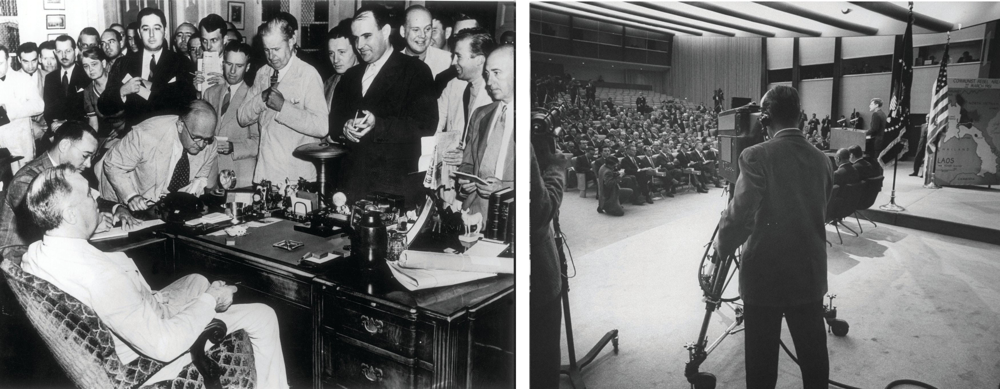
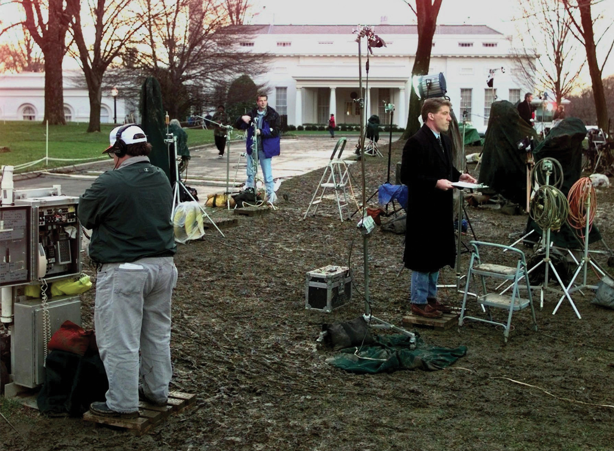

After reading this section, you should be able to answer the following questions:
The White House communications operation has four basic purposes.
How is the White House organized to go about achieving these purposes?
Presidents decide whether, when, where, at what length, and under what conditions they will talk to reporters. Most presidential interactions with the media are highly restricted and stage-managed.
In the best-known form of press conference, the president appears alone, usually before television cameras, to answer questions on the record from the assembled reporters who can ask anything on their minds for a given period of time (usually up to an hour). Presidents generally hold such press conferences when they need to respond to important issues or mounting criticism—or if they have been accused of avoiding direct questions from the press.
Press conferences allow presidents to dominate the news, pay obeisance to or at least acknowledge the importance of a free press, galvanize supporters, and try to placate opponents. Presidents, as much as reporters, control press conferences. They make opening statements. They choose who asks questions—at his first press conference President Obama recognized the presence of the new media by taking a question from a writer for the influential online-only news outlet the Huffington Post. They can recover from a tough question by finding someone to toss them a softball. Follow-up questions are not guaranteed. Presidents can run out the clock, blather on in evasive or convoluted language, and refuse to take or answer questions on a subject.Jarol B. Manheim, “The Honeymoon’s Over: The News Conference and the Development of Presidential Style,” Journal of Politics 41 (1979): 55–74.
Figure 13.5
The presidential press conference evolved from Franklin D. Roosevelt’s informal, off-the-record bull session in the Oval Office to a full-fledged staged event when President Kennedy invited television cameras to broadcast the conference live.
Source: Used with permission from Getty Images.
Nonetheless, press conferences have risks for presidents. Since reporters’ questions have become more challenging over time, presidents shy away from press conferences more and more.Steven Clayman and John Heritage, “Questioning Presidents: Deference and Adversarialness in the Press Conferences of Eisenhower and Reagan,” Journal of Communication 52 (2002): 749–75. Increasingly, they rely on joint press conferences, most often with foreign leaders. Such press conferences add questioners from another press corps, limit the number of questions to a handful, and reduce the amount of time for the president to answer questions.
Presidents favor ever more controlled interactions with reporters. Most typically, they make a brief statement or give a speech without answering questions, or pose in a photo opportunity, where they are seen but not heard. Controversial announcements may be made in writing so that television news has no damaging footage to air. “It is a rare day when the president is not seen by reporters. But it is also a rare day when his appearance is not a scripted one. The White House goal is to have the president publicly available, but to do so with his having as little vulnerability to error as the staff can fashion.”Martha Joynt Kumar, “The Daily White House Press Briefings: A Reflection of the Enduring Elements of a Relationship,” unpublished paper, April 1999, 9.
The most visible member of a White House publicity apparatus—and the key person for reporters—is the presidential press secretary.Woody Klein, All the President’s Spokesmen (Westport, CT: Praeger, 2008). The press secretary is “responsible for creating and disseminating the official record of the president’s statements, announcements, reactions, and explanations.”Martha Joynt Kumar, Managing the President’s Message: The White House Communications Operation (Baltimore: Johns Hopkins University Press, 2007), 179. The press secretary has three constituencies with different expectations of him: “the president, White House staff, reporters and their news organizations.”Martha Joynt Kumar, Managing the President’s Message: The White House Communications Operation (Baltimore: Johns Hopkins University Press, 2007), 180.
White House Press Briefings
Search the archives of press briefings at http://www.whitehouse.gov/briefing-room/press-briefings.
In every presidency starting with Ronald Reagan’s, press secretaries begin their day with meetings with the central coordinator of policy and message, the White House chief of staff, and other senior staffers to study overnight news developments (a news summary is circulated each day to senior staff), forecast where stories are going, and review the president’s schedule. Press secretaries next prepare for their first interaction with reporters, the morning’s daily, less formal discussion known as the gaggleThe White House press secretary’s 9:30 a.m. meeting with reporters, neither formal nor public; an important “dry run” for the on-the-record afternoon briefing..See Howard Kurtz, Spin Cycle: Inside the Clinton Propaganda Machine (New York: Free Press, 1998), and Kumar, “Daily White House Press Briefings: A Reflection of the Enduring Elements of a Relationship,” unpublished paper, April 1999. Cameras are not allowed into the gaggle. Reporters use tape recorders only to gather information, not for sound bites.
The press secretary begins the gaggle by reviewing the president’s schedule before entering into a fast-moving question-and-answer session. The gaggle benefits reporters: it provides responses to overnight news, gives guidance for the workday ahead, reveals the line the White House is pushing and allows them to lobby for access to the president. The gaggle helps press secretaries too by enabling them to float ideas and slogans and, by hearing what’s on reporters’ minds, prepare for the afternoon briefing.
The press secretary leads this more official 12:30 p.m. briefing, which is as close as anything to a daily enunciation of White House policy. Here, cameras are allowed; the briefing is broadcast live on cable television if news is brewing. The session is transcribed and disseminated (electronically and on paper) to reporters at the White House and beyond. The press secretary spends the hours between the gaggle and the briefing looking for answers to questions raised (or anticipated) and checking with other spokespersons elsewhere in the administration, such as at the Departments of State and Defense.
Figure 13.6

The daily White House press briefing is a central event of the day for both reporters and press secretaries.
Source: Photo courtesy of the White House (Tina Hager), http://georgewbush-whitehouse.archives.gov/history/photoessays/pressbriefingroom/02-js.html.
Briefings do not always benefit the White House. The presence of television cameras sometimes pushes reporters to be—or act—tough and combative for viewers. Reporters try to throw the press secretary off balance or to elicit a juicy or embarrassing admission. Briefings offer reporters a rare chance to quiz officials on matters the White House would prefer not to discuss. Press secretaries are often unresponsive to reporters’ questions, stonewall, and repeat set phrases. During a single briefing when he was peppered by questions about President George W. Bush’s National Guard service, press secretary Scott McClellan dutifully uttered the phrase “The president met all his responsibilities” some thirty-eight times.
The press secretary on the front line is not always the key public relations strategist. Richard Nixon was the first president to craft long-range communication strategies. A bevy of public relations veterans defined a White House priority or storyline, coordinated who said what, and planned public schedules of administration officials. They brought local reporters from outside Washington to the capital. The aim was to emphasize a single White House position, woo softer local news, and silence contrary messages in the administration.
Such tasks were given to the newly established Office of CommunicationsThe part of the White House Office devoted to long-term planning of communication, headed by the director of communications.—retained by all subsequent presidents. Directors of communications rarely interact with reporters on a regular basis; their job is to stress the big picture. Even when Nixon’s first successors, Gerald Ford and Jimmy Carter, pledged open and free interactions with reporters, they found they had to reopen the Office of Communications for central control of the all-important message.
Another lasting innovation of the Nixon presidency is the line of the dayThe issue or stance designated by the White House and sent to the remainder of the executive branch and to the media that day.. Specific topics and storylines are repeated throughout the administration as the focus for all discussion on that day. Presidents use the Office of Communications to centralize a marketing strategy on issues. They are often open about this. In 2002, White House Chief of Staff Andrew Card said the Bush administration waited until after Labor Day to lobby Congress to authorize war against Iraq because, in his words, “From a marketing point of view…you don’t introduce new products in August.”Quoted in Elisabeth Bumiller, “Bush Aides Set Strategy to Sell Policy on Iraq,” New York Times, September 7, 2002, A1.
The public must be reached through the news media. Reagan’s election took such efforts to new heights. Like Nixon, Reagan downgraded the news conference in favor of stage-managed appearances. A press officer who worked for both presidents noted a crucial distinction. The Nixon administration was restrictive, but he said, “The Reagan White House came to the totally opposite conclusion that the media will take what we feed them. They’ve got to write their story every day.…Hand them a well-packaged, premasticated story in the format they want, they’ll go away. The phrase is ‘manipulation by inundation.’”Les Janka, quoted in Mark Hertsgaard, On Bended Knee: The Press and the Reagan Presidency (Boston: Houghton Mifflin Harcourt, 1988), 52.
Reagan’s lesson has been learned by subsequent presidents and media advisors. Presidents rarely have to “freeze out” given reporters (when officials do not return their calls). Staff do sometimes cajole and berate reporters, but frontal assaults against the press usually only occur in clear cases of journalistic bungling.
More typically, presidents and their staffs try to manage the news. Presidents cultivate reporters, columnists, and pundits: they host lunches, dine with them, and hold off-the-record sessions. The staff members anticipate what reporters will ask in briefings and prepare the president accordingly. They design events to meet news values of drama, color, and terseness. And they provide a wealth of daily, even hourly, information and images.
Inundation is not sufficient. George W. Bush was typical of all presidents when he groused in 2003 to a regional reporter, “There’s a sense that people in America aren’t getting the truth. I’m mindful of the filter through which some news travels, and sometimes you have to go over the heads of the filter and speak directly to the people.”Quoted in Elisabeth Bumiller, “Trying to Bypass the Good-News Filter,” New York Times, October 20, 2003, A12.
All new presidents try novel strategies to do an end run around what they always perceive to be a biased press. President Franklin D. Roosevelt relished behind-the-scenes Oval Office conferences to woo Democratic-leaning reporters (and bypass Republican-leaning editorial pages).
President Richard Nixon shunned press conferences and sought other ways to get his messages out, such as through star-struck local news. President Bill Clinton instituted cozy miniconferences with other world leaders and brought in local television weather reporters for a confab on global warming. Nowadays, the White House deals directly with the regional and local press, special-interest media, and ethnic news organizations.
Presidents head the state, government, and their political party. So almost anything they do or that happens to them is newsworthy.Stephen J. Farnsworth and S. Robert Lichter, The Mediated Presidency: Television News and Presidential Governance (Lanham, MD: Rowman & Littlefield, 2006). They are the sole political figures whose activities are followed around the clock. Presidents fit news values perfectly. The ongoing saga of a familiar hero engaged in myriad controversies and conflicts, international and domestic, is far simpler to explain and present than complex scenarios of coalition-building in Congress.
About seventeen hundred reporters are granted White House press passes. But the key members of the White House press corps are the few dozen regulars assigned to go there day in and day out and who spend their work days there. “A White House press pass provides merely the privilege to wait—wait for a briefing; wait to see the president; wait until a press conference is called; wait to see the press secretary; wait to see senior officials; wait to have phone calls returned. There may be propinquity to power, but there is little control over when and how the news is gathered.”Martha Joynt Kumar, “The President and the News Media,” in The Presidency and the Political System, 6th ed., ed. Michael Nelson (Washington, DC: CQ Press, 2000) 835–80 at 867.
The regulars make up an intimate society with its own culture, norms, manners, friendship networks, and modes of interaction. The White House layout reinforces this in-group mentality. The briefing room, where press secretaries and reporters meet daily, is a claustrophobic, cluttered space with forty-eight scuffed and battered seats. Beyond the dais at one end, reporters can wander down the hall to buttonhole press officers, though they cannot go much farther (the Oval Office, just fifty feet away, is inaccessible). Hallways leading to two floors of press rooms are in the back; the rooms are crammed with desks and broadcasting equipment for the use of reporters. Along the corridor are bins that contain press releases, official statements, and daily schedules (which are also available electronically). Outside, on a once graveled-over and now paved section of the lawn named “Pebble Beach,” rows of television cameras await television reporters.
Figure 13.7
The White House accommodates television reporters to allow them to do their “stand-ups” with the august background of the White House portico. This area can become packed with reporters when big stories are developing.
Source: Used with permission from AP Photo/Joe Marquette.
Rather than foster enterprise, the White House herds reporters together, gives them all the same information, and breeds anxiety by leading them to believe they may be missing the big story everyone else is chasing.
Reporters submit to the conditions established by presidents and their staffers in receiving information. But they are less docile when they actually assemble that information in White House news.
The relationship between the White House and its press corps is ongoing. The “village” feel to the newsbeat includes presidents and their staffers. But while this day-to-day continuity favors cooperation, the divergent interests and notions of the White House and reporters makes for a constant tension. Reporters do not like appearing as “mouthpieces” for presidents. They embrace the notion of acting as watchdogs and seek ways to present an independent and critical account whenever possible in their White House stories.
What reporters consider news and what presidents consider news are often at odds. Presidents love to speak at length, be alone at center stage, favor nuance if not ambiguity, and focus on questions of policy. Reporters like terse sound bites, dramatic conflict, clear-cut comments, and a new installment on how the president is doing politically.
Reagan’s first White House spokesperson, Larry Speakes, had a plaque on his desk that read: “You don’t tell us how to stage the news, and we won’t tell you how to cover it.” Though he was being playful, Speakes revealed how the White House and the press corps each control one part of the news.
The White House controls whether, when, how, and where White House officials will meet reporters and what information to release. Pictures and video of the president are packaged along with slogans that make a visual case regardless of the angle the reporter advances. Clinton’s aides affixed captions to the presidential podium during ceremonies to underscore the theme they wished to communicate. George W. Bush’s assistants went one better, crafting twenty different canvasses that could be placed behind him, each emblazoned with a motto of the day, such as “Protecting the Homeland” or “Corporate Responsibility.” Dan Bartlett, then Bush’s director of communication, defended such branding: “The message should be seen and read and understood on TV. It’s a good reinforcement.”Quoted in Anne E. Kornblut, “President Is Keeping His Messages Front and Center,” Boston Globe, July 23, 2002, A4.
But reporters take the raw material provided by presidential news operations and craft it into a coherent and dramatic story. In a typical television news story, the president’s words and images make up a tiny fraction of the allotted time. Television reporters add old video, interview critics in Congress, cite poll numbers, and give their own interpretations. Even on cable television news, which often airs presidential remarks live during the day, reporters and commentators will hash over and contest the White House “angle.” Presidential statements have a different effect once placed into the news media’s sometimes dramatically divergent context.
The dilemma for presidents, as Clinton’s press secretary Mike McCurry noted, is that “ninety percent of what happens at the White House is pure boredom.”Quoted in Andrew Miga, “White House Drama More Colorful than the Real White House,” Boston Herald, September 23, 1999, 3. Reporters need drama. If presidents do not fit the heroic roles of “decisive problem solver” and “representative of the nation,” they can be slotted into a less positive frame. Politics will displace policy; criticism and conflict overwhelm praise and unity. Even in presidents’ supposed “honeymoon” periods, critical coverage is not unknown. Presidents are, then, in the unenviable position of needing the news and being routinely in its spotlight without being able consistently to control the images of themselves and their policies in that news.
During his first term in office, President Obama could claim several significant accomplishments. They included health-care reform, an economic stimulus program, financial regulation, educational innovations, consumer protections, the withdrawal of combat troops from Iraq, banning torture of prisoners in US custody, ratification of a new strategic arms reduction treaty with Russia, and repeal of the “Don’t ask, don’t tell” law.
These accomplishments, except for the killing of Osama bin Laden, were not as widely recognized as they could have been. One reason was, as the president told a reporter, “we probably spent much more time trying to get the policy right than trying to get the politics right.…And I think anybody who’s occupied this office has to remember that success is determined by an intersection in policy and politics and that you can’t be neglecting of marketing and P.R. and public opinion.”Peter Baker, “What Does He Do Now?,” New York Times Magazine, October 17, 2010, 42. His media operation was accused of being reactive instead of proactive in responding to reporters and of lacking the skill to promote and the language to sell the president, his policies, and his party.
Compounding this neglect, the media environment imposed four challenges to any attempts by President Obama to communicate effectively with the American public.
First, presidents’ prime-time addresses, even when carried by all networks, reach a smaller portion of the audience than they did in years past.Joe S. Foote, Television Access and Political Power: The Networks, the Presidency, and the “Loyal Opposition” (New York: Praeger, 1990); and Matthew A. Baum and Samuel Kernell, “Has Cable Ended the Golden Age of Presidential Television?” American Political Science Review 93 (March 1999): 99–114. The profit-minded media discourage presidents from taking too often to the airwaves. When presidents request air time, broadcast television networks can conclude the subject is not adequately newsworthy and turn them down.
Second, the news media are more than ever obsessed with conflict. As President Obama observed to Bob Schieffer, “the twenty-four-hour news cycle and cable television and blogs and all this, they focus on the most extreme elements on both sides. They can’t get enough of conflict.”CBS, Face the Nation, September 20, 2009.
Third, the media are more and more partisan—intensely so. For President Obama, this means virulent attacks and relentless denunciations by Fox News, America’s most watched cable news channel; the editorial page of the Wall Street Journal, America’s most widely circulated newspaper; and a conservative chorus led by Rush Limbaugh on talk radio. In addition, a bevy of more or less partisan commentators and pundits subject presidential speeches, press conferences, and statements to constant analysis and dissection.
Fourth, the media audience is increasingly dispersed, fragmented, and sometimes separated into mutually exclusive segments. People are divided by whether they read newspapers (and which ones), the kinds of movies and television programs they watch, their level of involvement with social media, the websites they follow, and much more.
Given this media environment, President Obama faced two daunting problems: (1) to reach as many of the various audiences as possible and (2) to do so with messages in support of his personal, political, and policy objectives.This discussion is based on Ken Auletta, “Non-Stop News,” New Yorker, January 25, 2010, 38–47.
One approach was to take advantage of new technologies through an Office of New Media. The president’s inauguration was the first to be put on YouTube, as are his weekly radio addresses. The White House website contains the president’s activities and agenda and features videos. Text messages and Twitter alerts are sent out to the president’s followers under his name. He also conducted the first Internet video news conference by an American president.
A second approach is to appear in many media venues. On September 20, 2009, President Obama gave separate back-to-back interviews advocating his health-care proposal to each of the hosts of the Sunday morning talk shows. (The interviews had been taped the previous Friday in the Roosevelt Room in the White House).
In seeking and finding audiences, the president has ranged far beyond Sunday morning interview programs. He has appeared on the late-night television talk shows of Jay Leno and David Letterman, The Daily Show with Jon Stewart, Oprah, and the morning talk show The View and gave an interview on America’s Most Wanted.
The president reached new audiences, appeared in comfortable settings, and was usually treated with deference and respect. Conversation took place in a relaxed atmosphere. He discussed his accomplishments and displayed mastery of policies yet at the same time was humanized as a family man with a sense of humor.
Figure 13.8

President Obama has ventured far and wide in the media landscape to find audiences—including to The Daily Show and The View.
Source: Photo courtesy of the White House (Pete Souza), http://www.flickr.com/photos/whitehouse/4876619097/.
There are risks. Appearances on entertainment shows and casual familiarity with hosts can undermine the majesty of the office. Commercial interruptions can diminish presidential dignity. Some interviewers may question the president’s policies and competence, as Jon Stewart has done. Others may even challenge the president’s authority, as Bill O’Reilly did in a fifteen-minute interview conducted just before Fox televised the 2011 Super Bowl.
The president’s visibility in the news is a double-edged sword. The news personalizes the presidency and presents the office through the individual president. There is high pressure for dramatic action and quick results. The constant presence of the White House press corps means that reporters clamor for presidential reaction to and action about any breaking news—which can easily overwhelm the president’s agenda.
The media encourage presidents to find policy areas that enable them to play the role of bold, public-minded leader. But because reporters seek conflict and drama at the White House newsbeat, stories are subject to what columnist Jonathan Alter has termed “the manic-depressive media.”Jonathan Alter, “The Manic-Depressive Media,” Newsweek, February 8, 1993, 29. In the way the media frame stories, each event is a make-or-break moment for the president, suitable for triumph or humiliation. Highs are higher; lows are lower. New issues that emerge can change the president’s depiction in the news.
Success in news coverage should not be equated with policy success. Consider the news image of the elder George Bush in the fall of 1990. The news contrasted his glory in the Gulf War against his bungle on the budget. From the start, Bush laid out a straightforward line in the 1990 crisis leading up to the war—push Iraq out of Kuwait—with such clarity and intransigence that it perfectly fit the media frame of decisive action. But when Bush engaged in complex budget negotiations with key members of Congress, the news media found him looking confused and waffling. The war was a media success; the budget was a media failure. But was the war a policy success and the budget a policy failure? Not necessarily. The war solved few of the problems that provoked Iraq’s invasion of Kuwait and almost led to civil war in Iraq. The budget agreement stanched the growth of the budget deficit and led to its later erasure.
It is hard for presidents to resist the temptation to appear in the news constantly, even though chasing after the readily available publicity might push them in policy directions that are far from desirable. If they want media attention, they must either opt for charged, straightforward issues and clear-cut commitments or make complex issues seem simpler than they are. They and their staffers try to package actions to balance the complexity of policies against the simplicity of news (and commentary), the need to keep options open as long as possible against the news media’s desire for drama, conflict, and closure.
Presidents interact with the media through press conferences, the press secretary, the Office of Communications, manipulation by inundation, and end runs around White House reporters. The White House press corps, in search of dramatic stories, is engaged in ongoing conflict and cooperation with the White House. President Obama encountered several problems with the media that he tried to resolve through new technologies and appearing in many media venues. It can be difficult for presidents to balance their policy interests with the media’s criteria of news and expectations of dramatic action and quick results.